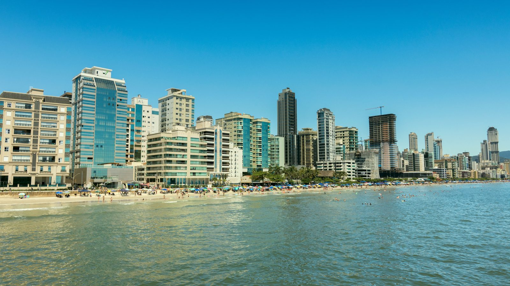

Itapema · Obras
Itapema · ObrasAlargamento da Meia Praia entra na reta final antes do verão
O desenho da obra, o custo e o cronograma, como estavam no começo de agosto.
A licença está na mão e o dinheiro está dividido. O que ainda não veio a público é a data de partida, e o pedido de suspensão feito pelo Ministério Público segue sem decisão.
Em 30 segundos · Modo de Leitura, formato original Santa Informa
A obra que vai alargar a faixa de areia da Meia Praia tinha agosto como mês de início, depois do defeso da pesca. Até esta publicação, a Prefeitura não anunciou resultado de licitação nem data de partida.
A licença ambiental de instalação foi entregue em maio pelo Governo do Estado, e o projeto prevê R$ 60 milhões, divididos meio a meio entre Prefeitura e Estado.
Em junho, o Ministério Público de Santa Catarina pediu à Justiça a suspensão do licenciamento e da licitação, defendendo estudo ambiental mais completo. O pedido ainda não foi decidido, e nada está suspenso.
InfraestruturaPublicada em Redação Santa Informa

O projeto de engordamento da Meia Praia prevê alargar a faixa de areia ao longo de 4,75 quilômetros de orla, com ganho de 20 a 60 metros conforme o trecho. A areia sai de uma jazida no mar, a cerca de 19 quilômetros da costa, e são aproximadamente 498 mil metros cúbicos a serem lançados na praia.
A conta é de R$ 60 milhões, metade da Prefeitura e metade do Governo de Santa Catarina, com execução estimada em cerca de quatro meses e meta de entregar antes da temporada.
A Licença Ambiental de Instalação foi emitida pelo IMA e entregue em maio pelo governador Jorginho Mello ao prefeito Alexandre Xepa. Com ela, o município ficou autorizado a seguir para a contratação. O projeto existe, a jazida está mapeada e o dinheiro está previsto pelas duas pontas.
Contamos o desenho da obra em 4 de agosto, quando a expectativa era começar dentro do mês.
Em 11 de junho, a 1ª e a 3ª Promotorias de Justiça de Itapema ajuizaram ação civil pública contra o IMA e o Município de Itapema. O pedido é suspender o licenciamento, a licitação e as obras até que se faça Estudo de Impacto Ambiental e respectivo relatório, o EIA/RIMA, em lugar do estudo simplificado aceito pelo IMA. O argumento é o tamanho da intervenção, que mexe na dinâmica do mar em quase cinco quilômetros.
O próprio Ministério Público diz que não é contra a obra. No comunicado oficial, descreve a ação como de caráter preventivo e institucional, para garantir que decisão de efeito duradouro se apoie em critério técnico consistente. A Prefeitura, por sua vez, sustenta a legalidade do licenciamento e trabalha para manter o cronograma.
O pedido de urgência aguarda decisão depois de o IMA e o município apresentarem suas justificativas. Enquanto não há decisão, nada está suspenso, e nada está começado também.
O resumo de 30 segundos está no topo e a versão completa é o texto acima. Aqui ficam as três leituras da casa sobre o mesmo assunto.
Clara, a otimista
O essencial está pronto, e isso não é pouco. Licença emitida, projeto técnico feito, jazida localizada e os dois governos com a parte deles reservada. Obra de praia costuma travar na falta de dinheiro ou na falta de projeto, e aqui nenhuma das duas coisas falta.
E tem uma boa notícia dentro da parte chata: o Ministério Público disse com letra bem clara que não é contra alargar a praia. Quando ninguém quer barrar a obra, sobra só combinar o caminho. Isso se resolve.
Seu Prudêncio, o criterioso
Vale acompanhar o calendário com calma. A meta é entregar antes do verão, a execução leva perto de quatro meses, e agosto já passou da metade sem data de início anunciada. Cada semana que corre agora sai do lado folgado do cronograma.
Merece atenção a diferença entre os dois estudos em discussão. O simplificado olha o efeito esperado, o completo abre fauna marinha, qualidade da água e pesca artesanal em capítulo próprio. Não é papel a mais por gosto de papel: em obra que altera a dinâmica do mar por quase cinco quilômetros, o estudo é o que responde onde a areia vai parar depois.
Uma sugestão útil seria a Prefeitura publicar o andamento da licitação e o cenário de prazo caso a decisão demore. Feita a ressalva, o projeto endereça um problema real da cidade, tem financiamento definido e chegou mais longe do que qualquer tentativa anterior de cuidar daquela faixa de areia. Isso conta.
Caco, o sarcástico
A praia vai ganhar até sessenta metros de areia. A gente ganhou, até agora, uma coleção de documentos com nome de sigla.
Tem areia mapeada a dezenove quilômetros da costa esperando a vez. É oficialmente a areia mais paciente de Santa Catarina, e olha que ela concorre com quem espera vaga no estacionamento da Meia Praia em janeiro.
Piada à parte, é bom que estejam discutindo estudo antes e não depois. Praia é como reboco: refazer sai muito mais caro que fazer certo na primeira vez.
Fontes: Ministério Público de Santa Catarina, Prefeitura de Itapema, IMA e Governo de Santa Catarina.
Itapema · ObrasO desenho da obra, o custo e o cronograma, como estavam no começo de agosto.
 Região · Economia
Região · EconomiaPor que a faixa de areia entrou na conta do preço do imóvel na cidade.
 Litoral · Economia
Litoral · EconomiaQuem mais está pagando estudo e projeto no litoral, e por quê.